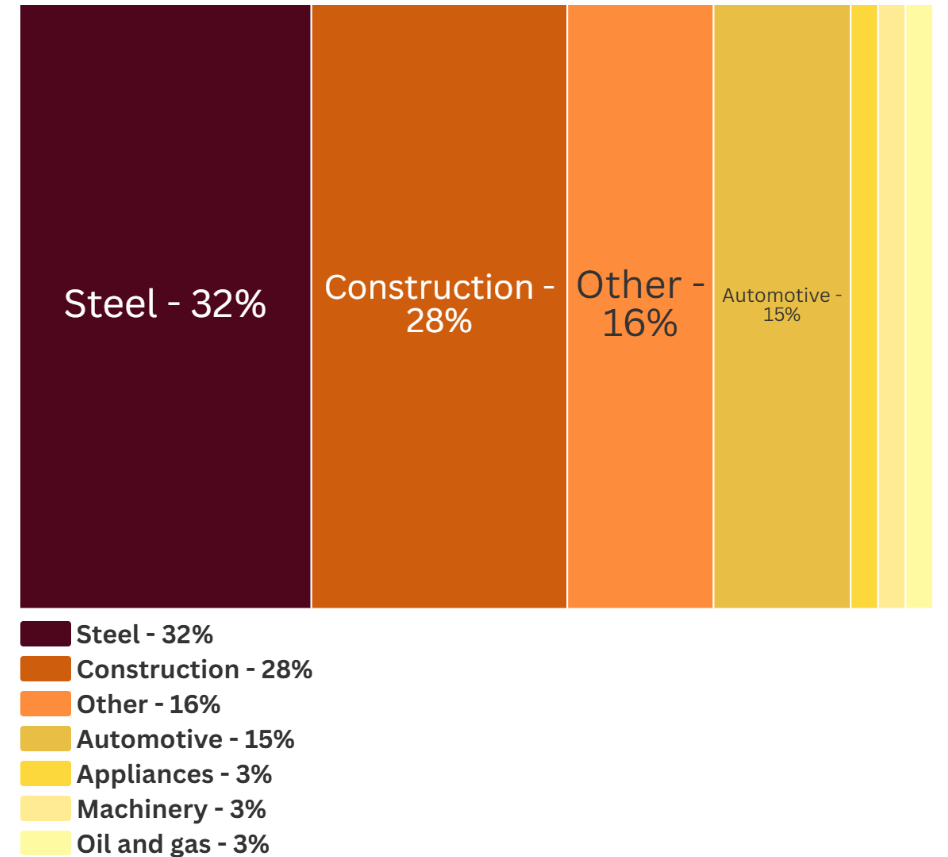
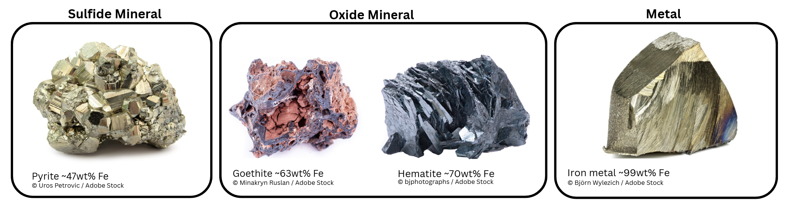

Iron is a transition metal that makes up about 5% of the Earth’s crust. Iron is not a native metal like copper. Iron metal is made of iron particles that are separated and recovered from sulfide or oxide ores. Ores are rocks that have a specific mineral structure that can be processed into a mineral structure that can be transformed into a These ores are more complex minerals A common sulfide ore is pyrite is the most common iron-containing sulfide mineral. Iron-containing oxide minerals occur as red or yellow ochre (clay rock). Red ochre hosts one of the most common iron-containing minerals called hematite (Fe2O3). Yellow ochres tend to host another iron-containing mineral called limonite (2Fe2OH6O3). There is also magnetite (Fe3O4) which is a black ore that is rich in iron and manganese.
Evidence of iron smelting goes back as far as 5000BC in Mesopotamia. Iron metal working became more popular in 1200 BC, demarking the Iron Age (1200-332BC). In 2BCE, China was manufacturing high-quality steel from pig iron by removing impurities with pressurized air. This method was the basis for the Bessemer process. The Bessemer process was coined in 1856 after English inventor, Henry Bessemer developed a fast, cheap industrial-scale method to remove impurities (carbon, manganese, sulfur, silicon) from steel by blasting smelted iron ore with cold air. Smelted iron ore is sometimes called 'pig iron'. As the Bessemer was an economically scalable process, steel became poised as a critical material during the Industrial Revolution in 1760-1840. Today some of the largest iron mines are in China, Australia, South Africa, Brazil, Russia, Ukraine and India. Most of the iron mines are surface mines.
Iron Mining: Getting the Ore
Topsoil and overburden, or the dirt that doesn’t have the sought mineral deposit, is excavated to reveal the iron ore. The rock is exploded to release the ore. From here it is transported to separation facilities. Sometimes the iron ore is so plentiful in the region that the soil occurs as shades of red, black and brown.
Iron Separation Processes: Crushing, Magnets and Froth Flotation!
To begin separating the iron, the fine particles are separated from larger ones in a cyclone. Cyclones use centrifugal force to make heavier particles settle at the bottom so they can be recycled into the milling circuit. Finer particles are subsequently filtered out and sent to thickening units. Thickening units filter out the liquid from this milled slurry. The dried concentrate is conveyed to a magnet that separates out the ferromagnetic particles.
The nonmagnetic ore is sent for froth flotation unit. The recovered magnetic iron particles are combined in the froth flotation feed because they also still have impurities. The iron concentrate is mixed with a cationic reagent that is often amine based as well as a frothing additive like methyl isobutyl. The reagent binds to the silica, freeing the iron particles. The silica is removed from the top of the unit and iron settles to the bottom of the tank. This metal concentrate is discharged to a thickening and filtration system to dewater so that it can be transported by pump, truck, or ship to smelting units. At these facilities the concentrate is transformed into pellets- they are pelletized.
Transforming Iron Concentrate to Metal
At the pelletizing facilities, organic binders like bentonite are mixed in with the concentrate. This mixture is sent to a balling drum which forces the mixture to aggregate into little balls. These are filtered so that the pellets that are too small are sent back to aggregate into larger sizes. The larger pellets are conveyed to a furnace where they are sintered at temperatures above 1200 C. At these temperatures, the iron oxide grains undergo recrystallization and sintering: the mineral grains fuse together into a rock-hard ceramic.
The final hardened pellets are mixed with coke and lime (Ca(OH)2. This mixture is transported to a blast furnace where compressed hot air forces the coke to burn and strip oxygen out as gaseous carbon monoxide. This process gives “pig iron”. Pig iron is iron with a carbon content of around 4%. The carbon content makes pig iron brittle. To remove the impurities from pig iron it is melted, mixed with lime (Ca(OH)2 and then blown with compressed oxygen. The carbon leaves the iron as gaseous carbon monoxide. At this point the iron has reached a level of purity where it can be alloyed with other materials like manganese, chromium and nickel. By combining the iron with these other metals, steel becomes the widely machined metal that is resistant to corrosion and abrasion.
What is iron used for?

Figure 1: Industrial uses of iron. Data source: USGS National Minerals Information Center, 2025.
What do some iron minerals look like?

Figure 2: Different types of iron containing materials.
Where are iron mineral deposits?

Figure 3: Global iron reserves as reported by the USGS. Data is from https://mrdata.usgs.gov/general/map-global.html
Where is iron mined?
Scroll with your mouse or touchpad over the tagged locations on the map to zoom in/out.
Who imports iron?
Click on the blue bubbles to see where gold is imported from.